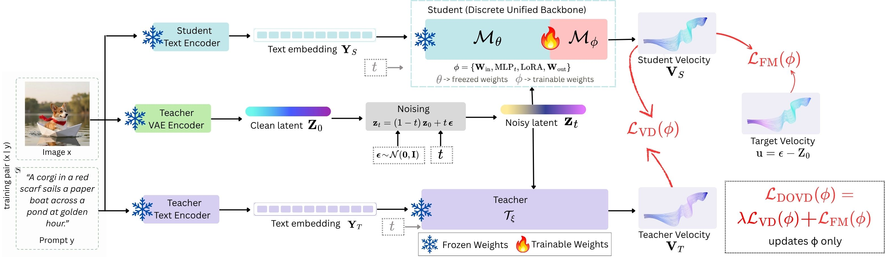

FlowShift turns discrete unified generators into continuous flow - higher fidelity, richer texture and lighting, with compositional control preserved.
42.5%
Lower COCO-30K FID
+1.78
Aesthetic score
99.5%+
Understanding retained
While discrete tokenization in Unified Multimodal Models (UMMs) establishes strong semantic reasoning, it introduces a strict quantization bottleneck that degrades fine-grained visual details, often resulting in structurally accurate but artifact-heavy images. We introduce FlowShift, a parameter-efficient post-training framework that bypasses this bottleneck by converting pre-trained discrete UMMs into continuous rectified-flow generators. Instead of discarding the backbone’s semantic priors, FlowShift replaces discrete visual interfaces with continuous latent projections and applies LoRA to the attention layers. To efficiently boost visual quality without semantic drift, we propose Dual-Objective Velocity Vector Distillation (DOVD), which aligns the model with a high-fidelity continuous teacher and ground-truth continuous trajectories. This approach drastically improves perceptual quality while preserving prompt adherence and reasoning. When applied to leading discrete UMMs, FlowShift significantly improves COCO-30K FID and aesthetic scores, while retaining over 99.5% of multimodal understanding capabilities. Ablations confirm DOVD drives generation quality. Ultimately, FlowShift achieves high-fidelity continuous generation without sacrificing pre-trained semantic grounding.
Why tokens lose detail
Discrete models pass every visual feature through a fixed codebook. Smooth variation in texture and shading is snapped to the nearest entry, so features that differ only slightly come out as the same token.
A fixed codebook
Every feature has to become one of K entries.
Many features, one token
Subtle differences collapse together.
Detail that can’t come back
What the codebook rounds off, no decoder can recover.
Tokens in, trajectories out
FlowShift keeps a pretrained discrete model frozen and teaches it to predict continuous velocity in a VAE latent space shared with a frozen continuous teacher - post-training only, no retraining from scratch.

Pretrained weights stay untouched, so semantic and compositional priors carry straight over.
A latent projector, timestep MLP, attention LoRA and a velocity head replace the discrete token interface.
DOVD matches both the ground-truth flow and a high-fidelity teacher’s velocity field.
Same prompt, sharper result
Each discrete model beside its FlowShift counterpart. Feathers, hair strands and pastry layers resolve, while the composition stays the same.
BibTeX
{{ bibtex }}